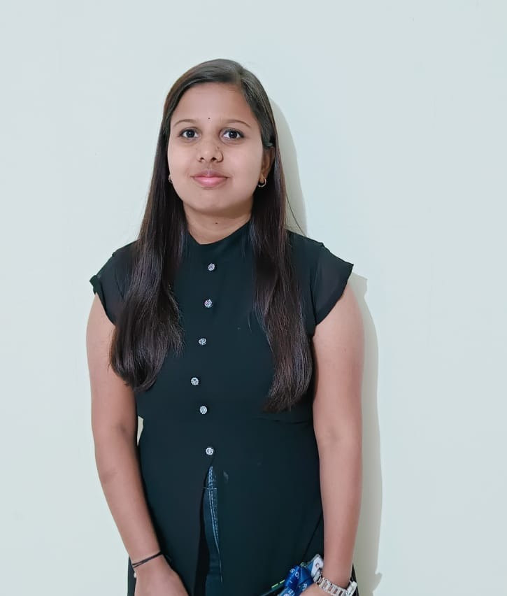

Soujanya

Summary
A quick learner with an avid passion for coding and all
things related to computer. Spends most of my time tinkering with various programming
constructs. Loves mathematics especially when it can be used
beautifully to optimise coded solutions.
Education
-
Bachelor of Engineering , Electronics and communication - R.V College of Engineering(2019-2023)
-
Pre-University Course(PUC)- Siddaganga independent PU College Davangere(2017-2019)
-
Secondary education - Jawahar Navodaya Vidyalaya Raichur(2016-2017)
Skills
-
Strong coding experience and knowledge in Java.
-
Experience with Frontend Web Technologies - HTML,CSS and JavaScript.
Other
Contact Me